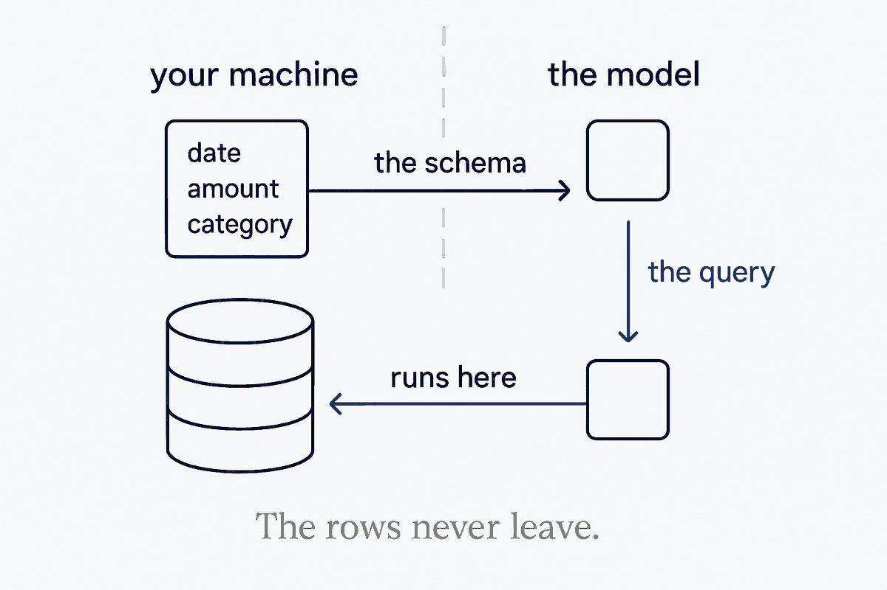

Give the AI the shape of your data, not the data: it reads the schema, writes the query, the query runs locally, and only the result goes back. The strongest airlock is one almost nothing has to pass through.

Most advice on AI and sensitive data is about cleaning the data before you send it. The stronger move is not to send it. Give the model the menu — the schema: tables, columns, what each field means — and keep the kitchen. The model reads the menu, writes the query, and the query runs on your own machine against your own data. What goes back to the model is the result, or only a summary of it. The rows never leave.
This works because modern models are better at writing the question than at holding the data. A well-described schema is enough for the model to reason about what to ask; the facts stay where they are. It is also the cheapest version of The Airlock: almost nothing has to cross, so there is almost nothing to strip.
The condition is structure. A model can only write a correct query against a schema it can read: named tables, described columns, consistent types. A pile of files has no menu. That is why this pattern is a payoff of modelling, not a privacy trick — the same data model that makes the system usable for you makes it safe to put an AI in front of it.
At personal scale: a question about your own spending answered by a local DuckDB query the model wrote, without the model ever seeing a bank line. At business scale: an accountant asks a question across a client's ledger, and the client's rows never reach the model's servers.